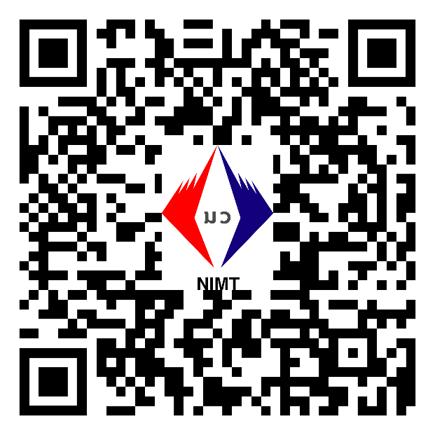
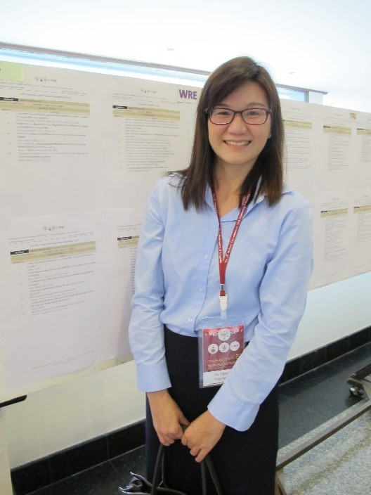

On 10 July 2019 at 08.30-16.30

ระบบดาวเทียมนำทางสากล (จีเอ็นเอสเอส) และการประยุกต์ใช้งานโดยเฉพาะเรื่องการเทียบเวลา

Abstract
Global Navigation Satellite System is multi-navigation based satellite constellations and multi-frequencies in L-bands comprising of the US GPS, Russian global navigation satellite system (GLONASS), European Union Galileo satellite navigation system, Chinese BeiDou system (BDS), Indian Regional Navigation Satellite System (NAVIC) and Japanese Quasi-Zenith Satellite System (QZSS); and. It was mainly used for positioning, navigation and timing. This tutorial session provides (1) introduction of GNSS system, signal structures, types of GNSS measurements and error sources that affects the GNSS measurements; (2) overview of GNSS positioning solutions, type of services and augmentations; and (3) applications of GNSS for time and frequency metrology especially on international time comparisons in order to maintain national time scale in accordance to the International System of Units of a second.
บทคัดย่อ
ระบบดาวเทียมนำทางสากลคือกลุ่มของระบบดาวเทียมนำทางหลายระบบและถ่ายทอดสัญญาณความถี่ที่หลายความถี่ในย่าน L-band ที่ประกอบด้วย จีพีเอส ของสหรัฐอเมริกา โกลนาสของสหพันธรัฐรัสเซีย กาลิเลโอของสหภาพยุโรป เป๋ยโต่วของประเทศจีน นาวิกของประเทศอินเดีย และ คิวซีเอสเอสของประเทศญี่ปุ่น จุดประสงค์หลักคือเพื่อ การระบุพิกัด การนำทางและการบอกเวลา การบรรยายในคร้งนี้จะประกอบด้วย (1) การแนะนำระบบดาวเทียมนำทางสากล โครงสร้างของสัญญาณ ชนิดของการวัดสัญญาณและค่าความคลาดเคลื่อน (2) การอธิบายเรื่องการหาค่าพิกัดจากระบบดาวเทียมนำทางสากล ประเภทของการให้บริการ และระบบช่วยในการระบุตำแหน่ง (3) การประยุกต์ใช้งานจากระบบดาวเทียมนำทางสากล เพื่อมาตรวิทยาเวลาและความถี่ โดยเฉพาะอย่างยิ่งเรื่องการเทียบเวลาระหว่างประเทศสำหรับการรักษามาตรเวลาของประเทศไทยให้เป็นไปตามระบบหน่วยวัดระหว่างประเทศของวินาที
Biographical Sketch
Thayathip Thongtan is currently a professional electrical metrologist at time and frequency laboratory, electrical metrology department, National Institute of Metrology (Thailand). She has working experiences in time and frequency calibrations, GNSS/GPS time comparisons and GNSS reference station for positioning and timing in Thailand. She is also a master degree examiner at the department of survey engineering, faculty of engineering, Chulalongkorn University. She holds a PhD in geomatics engineering from University College London, a master in advanced manufacturing from Brunel University, London; and a bachelor in electrical engineering from Kasetsart University.
ประวัติโดยสังเขป
ทยาทิพย์ ทองตัน ปัจจุบันเป็นนักมาตรวิทยาชำนาญการ ประจำห้องปฏิบัติการเวลาและความถี่ ฝ่ายมาตรวิทยาไฟฟ้า สถาบันมาตรวิทยาแห่งชาติ โดยมีประสพการณ์ใน การสอบเทียบสัญญาณเวลาและความถี่ การเปรียบเทียบสัญญาณเวลาด้วยระบบดาวเทียมนำทางสากล/จีพีเอส และการตั้งและดำเนินงานสถานีฐานอ้างอิงรับสัญญาณจากระบบดาวเทียมนำทางสากลเพื่อการกำหนดพิกัดและบอกเวลาสำหรับประเทศไทย นอกนี้ ยังเป็นคณะกรรมการภายนอกในการสอบวิทยานิพนธ์ระดับมหาบัณฑิตของวิศวกรรมสำรวจ จุฬาลงกรณ์มหาวิทยาลัย โดยได้สำเร็จการศึกษาระดับปริญญาเอกด้านวิศวกรรมยีออเมติกส์จากมหาวิทยาลัยคอลเลจลอนดอน ปริญญาโทด้านวิศวกรรมการผลิตขั้นสูงจากมหาวิทยาลัยบรูเนล และปริญญาตรีด้านวิศวกรรมไฟฟ้าจากมหาวิทยาลัยเกษตรศาสตร์
บทคัดย่อ
เครื่องมือวัดปริมาณทางไฟฟ้าปัจจุบันได้ถูกนำมาใช้งานกันอย่างแพร่หลาย ทั้งภาคการศึกษา ภาคอุตสาหกรรม รวมไปถึงศูนย์สอบเทียบ โดยเครื่องวัดที่ถูกนำไปใช้งานจะมีค่าความแม่นยำ(Accuracy) แตกต่างกันไปตามแต่ละรุ่นของเครื่องมือวัดและความต้องการของผู้ใช้งานที่จะเลือกใช้ตามความเหมาะสมในการใช้งานเพื่อต้องการความถูกต้องให้กับผลผลิตเพื่อเพิ่มคุณภาพของสินค้าให้มีความถูกต้องและน่าเชื่อถือ ค่าความแม่นเครื่องมือวัดจะถูกระบุโดยผู้ผลิตไว้ในคู่มือการใช้งาน โดยค่าความแม่นจะนิยมใช้กันที่ 1 ปี เมื่อครบวงรอบการใช้งาน 1 ปี เครื่องมือจะต้องถูกนำไปสอบเทียบเพื่อให้ใช้งานได้อย่างถูกต้องในวงรอบของปีถัดไป ซึ่งผู้ใช้งานจะต้องมีการทวนสอบเครื่องมือวัดหลังเครื่องสอบเทียบเสร็จพร้อมกับผลการสอบเทียบในใบรับรองผลการสอบเทียบ (Certificate) ว่าเครื่องมือวัดปริมาณทางไฟฟ้ายังคงเป็นไปตามเกณฑ์การใช้งานของเครื่องมือวัดปริมาณทางไฟฟ้า
ประวัติโดยสังเขป
คุณกองศักดิ์ ทองบุญ นักมาตรวิทยาชำนาญการ สถาบันมาตรวิทยาแห่งชาติ
-การศึกษา ระดับปริญญาโท คณะวิทยาศาสตร์ จุฬาลงกรณ์มหาวิทยาลัย
-การทำงาน 2547-ปัจจุบัน การดูแลรักษาค่าความถูกต้องด้านเครื่องมือวัดทางไฟฟ้าชนิดหลายฟังก์ชั่น